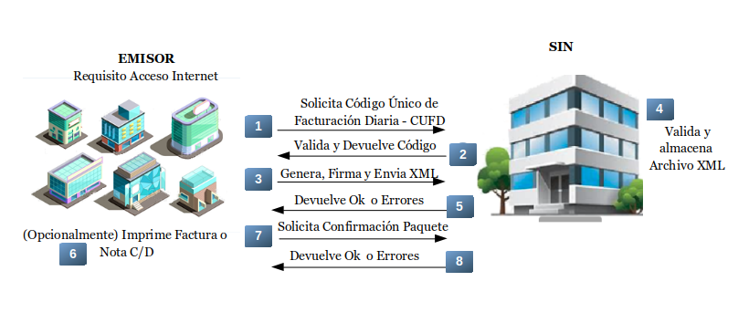

Facturación Electrónica para contribuyente.
Modalidad para la emisión de Facturas Digitales firmadas digitalmente,
además del uso de Token propio o delegado a través de un Sistema Informático
de Facturación autorizado por la Administración Tributaria y su posterior envío,
registro y validación en los servidores de base de datos del SIN..
Características:
- Uso de la Firma Digital.
- Impresión de la Factura Digital de manera opcional.
- Envío individual de la Factura firmada digitalmente en formato XML.
- Envío agrupado en paquete por contingencia de las Facturas en formato XML firmadas digitalmente.
- Envío masivo en forma de paquetes de las Facturas en formato XML firmadas digitalmente.
